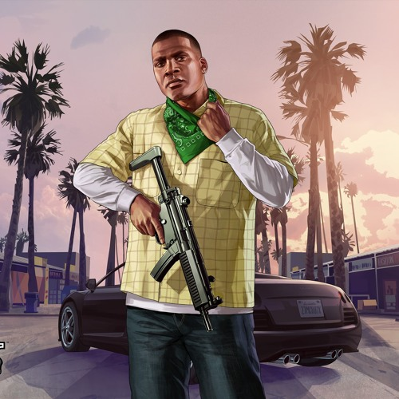
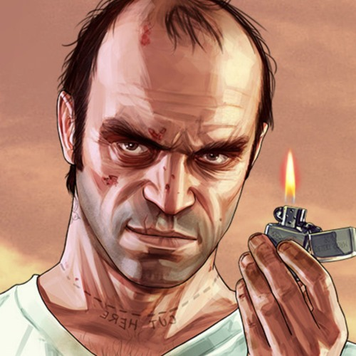

Fő karakterek és történetük
 |
 |  | |
Michael De Santa |
Franklin Clinton |
Trevor Philips |
|
| Michael visszavonult, jómódban élõ, profi bankrabló, akit az FIB bevett a tanúvédelmi programba a családjával. Van egy felesége és két gyereke, Amanda De Santa, James "Jimmy" De Santa és Tracey De Santa, akikkel nem jön ki jól, aminek a vége majdnem az lett, hogy végleg szétváltak. Hangja & mozgása: Ned Luke. |
Franklin afroamerikai fiatalember, aki a játék eseményei előtt kisstílű bűnöző, emellett sok tapasztalata van a volán mögött. A nagynénjével él egy házban, de a késõbbiekben Lester vesz neki egy nagy luxus házat, és ott éli tovább az életét a kutyájával, Choppal. Hangja & mozgás: Shawn Fonteno. |
Trevor volt barátja Michaelnek, vidéken él, fekete ügyletekkel foglalkozik és egy forrófejû pszichopata. 2004-ben North Yankton-ban Trevor részt vett a bankrablásban, ahonnan sikerült elmenekülnie, és azt hitte, hogy Michael meghalt, de 9 évvel késõbb a hírekben hallotta, hogy kiraboltak egy ékszerboltot Los Santosban, aminek Michael is részese volt, így elment Los Santosba, hogy megtalálhassa õt. Hangja & mozgása: Steven Ogg. |